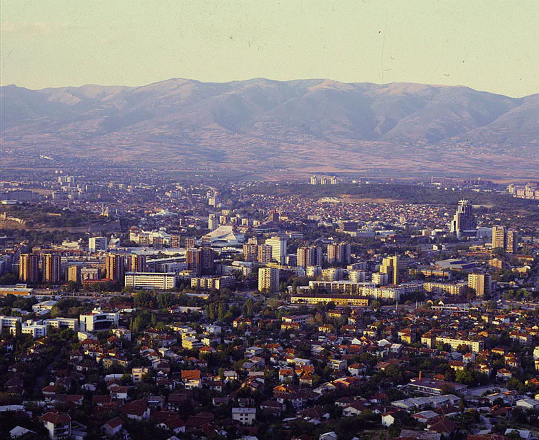
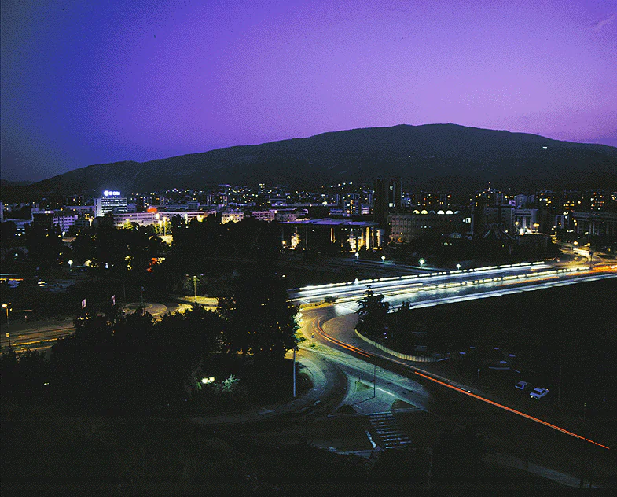

Даут Пашин Амам
- Производство
- УФУЖ и Документарен филм Прага
- Сценарио и режија
- Славко Јаневски и EMAN CANERA
- Година
- 1959
- Должина
- 00:08

Соборен храм "Св. Климент Охридски" На 12 август 1990 година е извршено свечено осветување на Соборниот храм "Св. Климент Охридски" во присуство на бројно високо свештенство на чело со архиепископот Господин Господин Гаврил. На свеченоста присуствуваа околу 80 илјади граѓани на Скопје, од другите градови на Македонија и Македонци од дијаспората (Австралија, Канада, САД и од повеќе земји од Европа).


Поглед од камениот мост кон стариот дел на градот.

Шеталиштето на десната страна на реката Вардар.

Скопската тврдина - Кале и реката Вардар.

Залез над стариот камен мост.


Панорамски поглед на централното подрачје на Скопје од скопската тврдина - Кале.

Панорамски поглед на Скопје. Во централен план е театарот на Скопје.

Ристиќевата палата и плоштадот.

Дел од улицата "Македонија" кон плоштадот.


Трговскиот центар "Мавровка"

Дел од центарот на Скопје - "Арапска куќа".

Зградата на весникот "Нова Македонија".

Трговскиот центар "Буњаковец".

Старите занаети се уште опстојуваат во Скопје. На фотографијата е прикажан дуќан во кој се изработуваат алати за домаќинството. Начинот на изработка е скоро ист како пред стотици години.

Дел од Даут пашин амам и зградата на Македонската радио телевизија, во позадина.

Дел од старата скопска чаршија.

Панорама на Скопје кон северозапад.

Ноќна панорама на Скопје кон северозапад.

Поглед на Скопје од планината Водно.

Панорама на централното градско подрачје од скопската тврдина - Кале.


Споменикот на Мајка Тереза, подигнат на 5-ти септември 1998 година.

 Аквадукт4 разгледници
Аквадукт4 разгледници Кале30 разгледници
Кале30 разгледници Мостови60 разгледници
Мостови60 разгледници Кеј58 разгледници
Кеј58 разгледници Плоштад46 разгледници
Плоштад46 разгледници Објекти66 разгледници
Објекти66 разгледници Христијански храмови19 разгледници
Христијански храмови19 разгледници Муслимански објекти33 разгледници
Муслимански објекти33 разгледници Офицерски дом29 разгледници
Офицерски дом29 разгледници Театар28 разгледници
Театар28 разгледници Железничка станица13 разгледници
Железничка станица13 разгледници Училишта36 разгледници
Училишта36 разгледници Паркови12 разгледници
Паркови12 разгледници Пазари18 разгледници
Пазари18 разгледници Улици38 разгледници
Улици38 разгледници Панорама I60 разгледници
Панорама I60 разгледници Панорама II30 разгледници
Панорама II30 разгледници Колажи55 разгледници
Колажи55 разгледници Поплави9 разгледници
Поплави9 разгледници Земјотрес27 разгледници
Земјотрес27 разгледници Скопје 200026 разгледници
Скопје 200026 разгледници